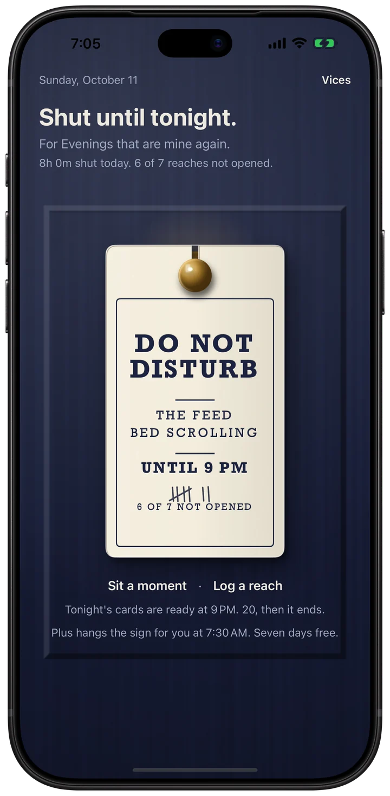
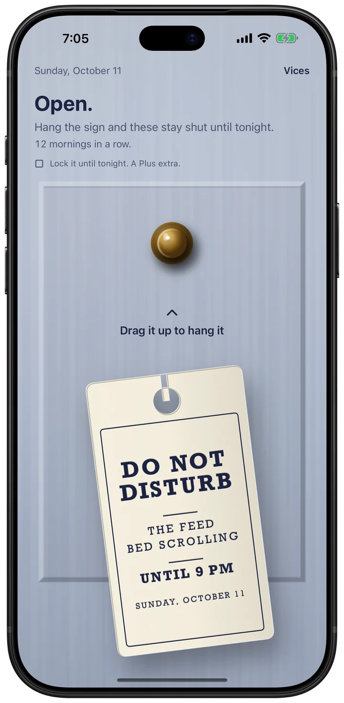
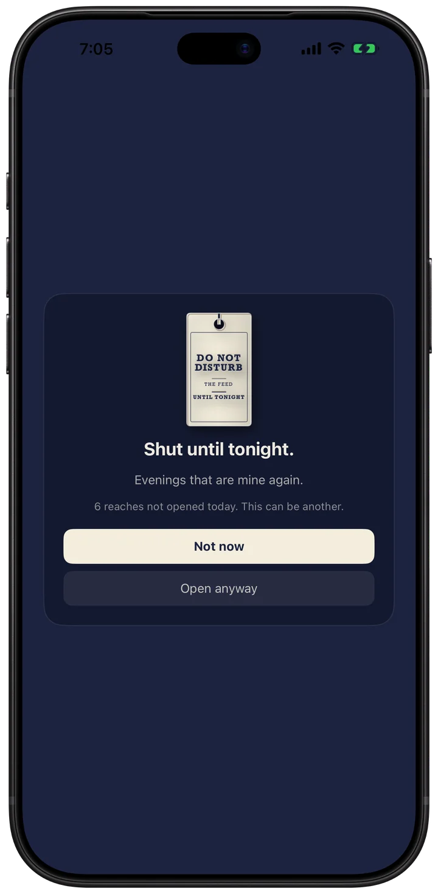
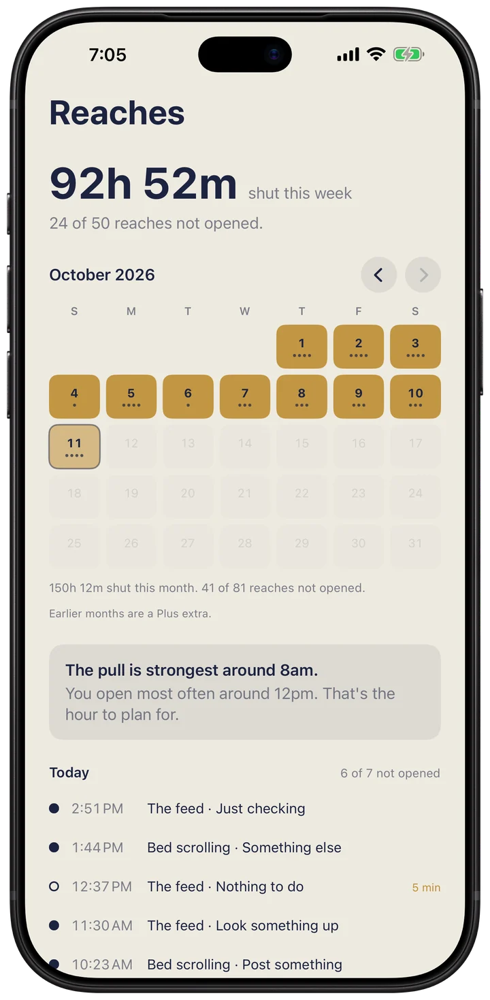

The Do Not Disturb sign you hang on your own door.
Free to try. No account. No ads.

ScrollKeep is an iPhone app to stop doomscrolling. It is a Do Not Disturb sign you hang on your own door.
Hang it in the morning and the apps you name are shut until tonight, shielded by Apple's Screen Time. Reach for one and the sign is there: not now, or open it anyway for a few minutes. Every reach you don't open is a pencil mark on the sign. In the evening there is a short deck of things worth knowing, and it ends on purpose.

Hang it in the morning.

Reach, and the sign is there.

Every reach you didn't open.
The details
Price
Free to try. Plus is optional: $19.99 a year after a free week, $4.99 a month, or $49.99 once (US prices).
Ads
None
Account
None. No sign-up, no server.
Privacy label
Data Not Collected
Works offline
Yes
Needs
An iPhone with iOS 17.0 or later, with Screen Time access.
Checked against the App Store listing on November 10, 2026.
The research behind it
ScrollKeep's door works like a pause that has been tested. In a six-week field study of 280 people, a short pause before a distracting app opened led them to close the app again 36% of the time, and by the last week they tried to open those apps 37% less than in the first (Grüning, Riedel and Lorenz-Spreen, PNAS, 2023).
That study tested the pause in another app, one sec, not in ScrollKeep.
Support
Found a bug, or want something added? Email me at minieriapps+scrollkeep@gmail.com. I make ScrollKeep on my own and read every message. Give me a couple of days to reply.
Common questions
The door isn't appearing. ScrollKeep needs Screen Time access: Settings › Screen Time › Apps with Screen Time Access › ScrollKeep. Then hang the sign; apps are only shut while it's up.
I can't open an app I need. Tap "Open anyway" on the sign for a five-minute break, or take the sign down to close the day. Apple always lets you turn Screen Time access off in Settings.
Which apps did I pick? Apple never tells ScrollKeep the names of the apps you choose, only you can see them in the picker. That is why you name each vice yourself.
Plus and subscriptions. The sign, the door, the count, the cards and the SOS are free. Plus (yearly with a free week, monthly, or once for life) hangs the sign for you each morning, locks it until tonight, takes every vice, and keeps every month. Manage or cancel from the Settings app › your Apple Account › Subscriptions.
Privacy Policy
Last updated: October 1, 2026
ScrollKeep does not collect, transmit, sell, or share any of your data. There is no account, no login, and no server.
What we collect
Nothing. The app has no analytics, no ads, no third-party SDKs, and makes no network requests of its own. Because there is no backend, your data physically cannot reach us.
Screen Time
ScrollKeep uses Apple's Screen Time framework (Family Controls) to shield the apps and websites you choose. Your choices are stored by Apple as opaque tokens that ScrollKeep cannot read, name, or export; they never leave your device. ScrollKeep does not read your usage history; the only records it keeps are the pledges, reaches, and notes you make in the app, on your device.
Where your data lives
Only on your iPhone, in Apple's on-device database. Delete the app and the data goes with it.
Notifications
If enabled, the morning and evening reminders are scheduled locally on your device and are not sent through any server.
Face ID and the app lock
ScrollKeep does not collect, access, store, or share face data. The optional app lock (in ScrollKeep's Settings, off by default) uses Apple's LocalAuthentication framework: iOS performs the Face ID, Touch ID, or passcode check itself and tells ScrollKeep only whether it succeeded. Your face data stays in your device's Secure Enclave under Apple's control; ScrollKeep never receives it, so there is nothing for us to use, retain, disclose, or share with any third party. To withdraw permission, turn the lock off in ScrollKeep's Settings, or switch off Face ID for ScrollKeep in the iOS Settings app (Face ID & Passcode › Other Apps). Because ScrollKeep holds no face data there is nothing for it to delete; your enrolled face is managed, and can be removed, only in iOS Settings › Face ID & Passcode.
Your person
If you add a contact for the SOS, the name and number stay on your device; a tap opens Messages with a blank text, and nothing is ever sent without you.
In-app purchases
ScrollKeep Plus (yearly, monthly, or lifetime) is handled entirely by Apple's App Store. ScrollKeep never sees your payment details; Apple's own privacy policy applies to the transaction.
Children
ScrollKeep does not knowingly collect information from anyone, including children.
ScrollKeep is a personal companion. It is not a medical device, does not provide medical advice, diagnosis, or treatment, and is not a substitute for professional help.